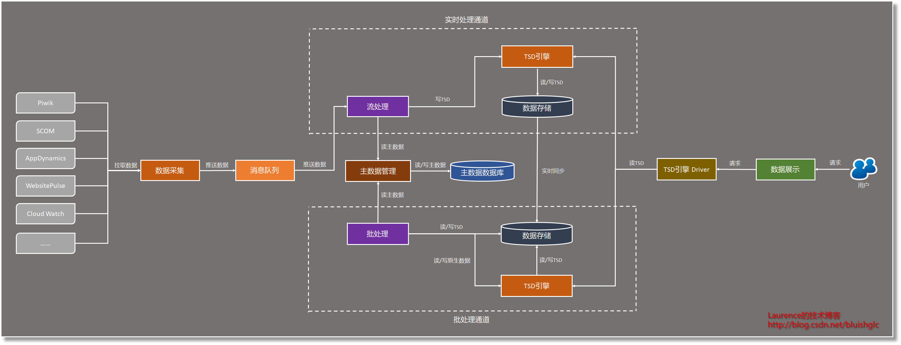
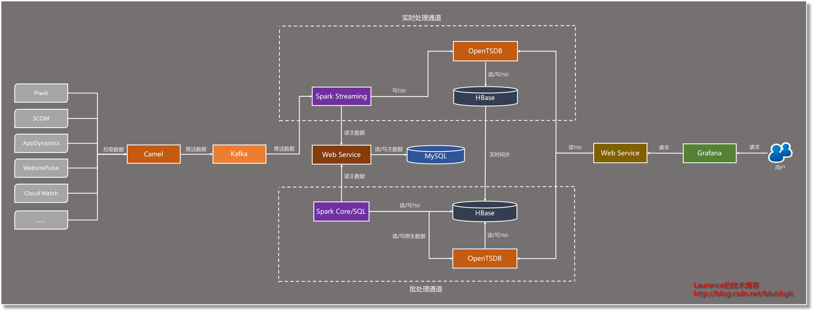
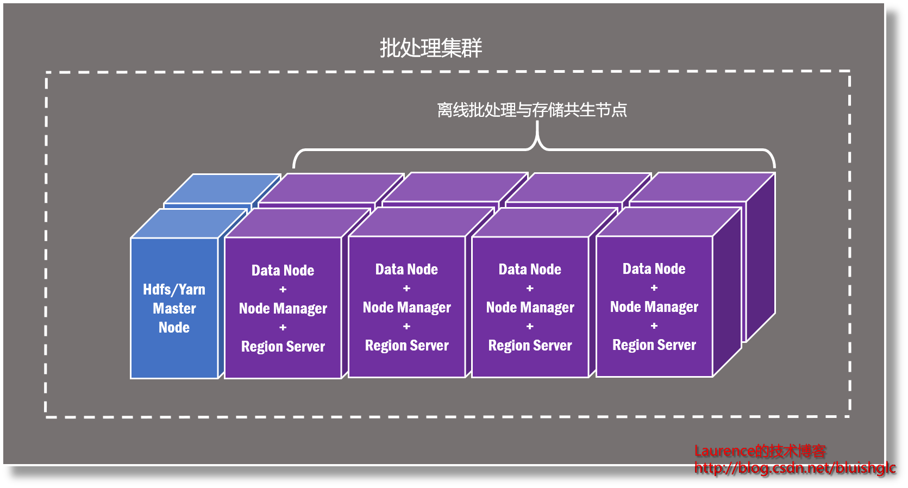
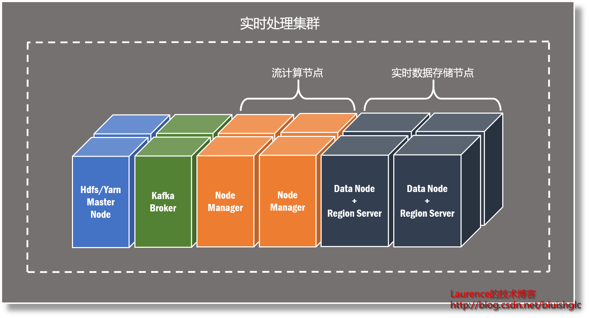
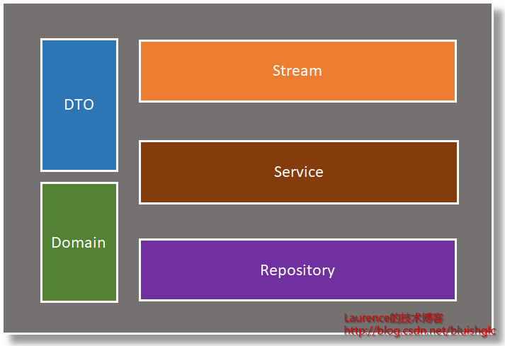

时间序列大数据平台建设经验谈
版权声明：本文由本人撰写并发表于2018年1月刊的《程序员》杂志，本文版权归《程序员》杂志所有，未经许可不得转载。### 引言
在大数据的生态系统里，时间序列数据(Time Series Data，简称TSD)是很常见也是所占比例最大的一类数据，几乎出现在科学和工程的各个领域，一些常见的时间序列数据有：描述服务器运行状况的Metrics数据、各种IoT系统的终端数据、脑电图、汇率、股价、气象和天文数据等等，时序数据在数据特征和处理方式上有很大的共性，因此也催生了一些面向面向时序数据的特定工具，比如时序数据库和时序数据可视化工具等等，在云平台上也开始出现面向时序数据的SaaS/PaaS服务，例如微软最近刚刚发布的Azure Time Series Insight。本文会介绍一个时间序列数据处理平台案例，探讨这类大数据平台在架构、选型和设计上的一些实践经验以供参考。
业务场景
本文介绍的案例是一个面向大型企业IT系统运维的监控平台，数据来源于多种监控终端产生的时序数据，涉及的数据源涵盖了SCOM、AppDynamics、Website Pulse、Piwik以及AWS Cloud Watch等多种主流的第三方监控工具，基于组织内部的IT规范，所有应用系统都安装了上述一种或多种监控工具，这为建立一个统一的多维度的监控平台提供了保证，该平台基于多种监控数据，对同一应用/服务系统进行综合的健康评估，在发生故障时会根据不同的数据源进行交叉验证，从而帮助运维人员快速和准确地定位故障原因。
架构设计
完整的大数据系统往往包涵 数据采集 ，消息对列，实时流处理，离线批处理，数据存储和数据展示等多个组件，为了满足业务上对实时监控和历史数据汇总分析的需求，系统遵循了Lambda架构，将实时流处理与离线批处理进行了分离。此外，鉴于平台处理的所有数据均为时序数据，在架构上针对这个特点着重进行了调整和优化，其中重要的一环是引入“时间序列数据库”作为核心的数据存储与查询引擎。
系统完整的数据流如下：首先，数据被数据采集组件从外部系统采集并来放入消息队列，接着，流处理组件从队列中取出数据进行流式计算，消息队列从中的起到的作用是平衡“生产者”——数据采集组件和“消费者”——流处理组件在消息处理上的速率差，提升系统的稳定性和可靠性。数据在流处理组件中会经历清洗、过滤、转换、业务处理等诸多环节，之后按TSD引擎规定的标准TSD格式推送到TSD引擎，由TSD引擎最终写入后端数据库。
实时流处理部分要求数据从采集到最后的展示控制在秒级延迟，严格来说，这是一套近实时系统，但其实时性已经足够满足业务上的需求，为了保证处理速率，实时链条上的数据大多数时间是驻留在内存中的，好在实时部分只关注近两周的数据，所以总的内存消耗处在可控的范围之内。
在批处理数据线上，利用数据库的同步机制将实时部分落地的数据持续同步到批处理的数据库上，这个库存储着数据全集，所有批处理相关的查询都在这个库上执行，与实时部分的组件完全隔离。批处理会保存过去三年的数据，分析尺度多为日，周，月甚至年。不同于一般离线分析系统选型Hive一类的数据仓库，我们希望在离线分析时继续充分利用时序数据库带来的种种好处，比如经过特殊优化的时序数据查询，开箱即用的查询接口等等，所以在离线部分我们依然配备TSD引擎，批处理组件在实现业务需求时可以深度利用TSD引擎对时序数据进行聚合运算，在聚合之后的结果上再进行更加复杂的分析并写回数据库，同时也可以在普通查询无法实现需求时越过TSD引擎直接对底层数据文件进行MR计算。
最后，数据展示组件会从TSD引擎中提取数据，以各种形式的图表展示给用户。在实际的开发中我们发现TSD引擎对数据格式有诸多的限制，有的TSD需要进行某些转换和适配才能展示，因此我们在TSD引擎和数据展示组件中间引入了一个轻量的驱动程序来透明地解决这些问题。
基于上述分析和实际的原型验证，在多轮迭代之后，我们最终成形的系统架构如下：

接下去我们会对每个组件逐一进行介绍。
组件与选型
数据采集
平台的数据来源非常多，涉及到的协议类型自然就多，并且伴随着以后的持续建设，会有越来越多新的数据源和传输协议需要被支持，因此我们希望选定的组件能够支持非常丰富的协议类型，同时尽可能地通过配置去集成数据源并采集数据，避免编写大量的代码。目前业界较为主流的数据采集工具有Flume、Logstash以及Kafka Connect等等，这些工具各有各的特点和擅长领域，但是在支持协议的丰富性和可配置性上，与我们的需求有一定的差距。
其实有一个一直被人忽视但却是非常理想的数据采集组件——Apache Camel，它主要应用于企业应用集成领域，也被一些系统作为ESB（企业服务总线）使用，其作用是在应用系统林立的企业IT环境中扮演一个“万向接头”的角色，让数据和信息在各种不同的系统间平滑地交换和流转，经过多年的积累，Camel已经支持近200种协议或数据源，并且可以完全基于配置实现，这恰好满足了我们数据采集的需求，经过原型验证，也证明了我们的选择是明智的。
最后，作为一个非大数据组件，对于Camel的性能和吞吐量我们是有清晰认识的，通过对数据源进行分组，使用多个Camel实例分区采集数据，我们从架构上轻松地解决了这些问题。
消息队列
在消息队列的选择上没有可以讨论的，Kafka几乎是不二的选择，我们也不例外。
流处理
流处理和批处理都是业务逻辑最集中的地方，也是系统的核心。目前用于流处理的主流技术是Storm和Spark Streaming ，对两者进行比较的文章很多，通常认为Storm具有更高的实时性，可以做到最低亚秒级的延迟，相比之下Spark Streaming的实时性要差一些，因为它以"micro batch"的方式进行流处理的，但是依托Spark这个大平台，从统一技术堆栈和与其他Spark组件交互的角度考虑，Spark Streaming变得越来越流行，鉴于在业务上秒级延迟已经可以满足需求，我们最终选择了后者。
批处理
传统大数据的离线处理多选择以Hive为代表的数据仓库进行建模和分析，这在很多项目上被证明是可靠的解决方案。后来随着Spark的不断壮大，Spark SQL的使用越来越广泛，并且Spark SQL完全兼容Hive，这使得迁移工作几乎没有任何障碍。对于复杂的非结构化数据， Hadoop 平台上通过MR编程去处理，Spark是通过Spark Core的RDD编程实现。如今Spark在大数据处理的很多方面已经取代Hadoop成为大数据的首选技术平台，我们在批处理的选型上也没有过多的讨论，使用Spark Core + Spark SQL是一个自然而然的决定。
但是考虑到系统处理的是TSD数据，如前文所属，在批处理的数据链条上，TSD引擎依然是一个必不可少的角色，我们设计的策略是:
-
所有TSD引擎可以直接支持的查询交由TSD引擎直接处理
-
复杂的业务处理可以通过TSD引擎进行预处理，将预处理结果交给Spark Core进行深度分析并将结果写回数据库
-
针对TSD引擎无法完成的分析逻辑，由Spark Core或Spark SQL绕过TSD引擎，直连后端的HBase进行分析处理，结果同样直接写到HBase上
-
为提升性能，对分析中使用到的以日/周/月/年为单位的中间表进行预生成计算。
主数据管理
主数据是指来自数据源的核心业务对象，对于我们这个以监控为核心的平台，主数据包括：服务器、系统拓扑结构、站点、网络设施等等，主数据往往都跨越多种不同的数据源，并且经常发生变更，需要对其进行定期维护。
为此，我们构建了一个统一的主数据管理组件，并通过Web Service的方式向外提供主数据，由于平台在流处理和批处理过程中需要频繁地使用主数据，而主数据的体量并不大，所以我们会让流处理和批处理组件一次性地将主数据加载到内存中，同时为它们加入命令行和Restful API接口，允许它们在主数据发生变更时重新加载主数据。
主数据管理模块是一个传统的Web应用，基于Spring-Boot构建，使用MySQL存储导入的主数据，对外通过Restful API提供主数据供给服务，它还有一个管理页面方便管理员维护主数据。
TSD引擎与数据存储
TSD引擎负责TSD的写入和查询，很多TSD数据库会利用一个成熟的No SQL数据库 进行数据存储，而TSD引擎则专注在TSD数据的处理上。这两部分密不可分，因此我们放在一起讨论。
我们对时间序列数据库的选型主要是在目前业界最主流的两个产品InfluxDB和OpenTSDB之间展开的。 前者使用GO语言编写，后端存储先后使用过LevelDB和BoltDB，现在使用的则是InfluxDB自己实现的Time Structured Merge Tree引擎，OpenTSDB使用Java编写，后端存储使用HBase。在单机性能上，多种对比测试显示InfluxDB具有更高的性能，但我们最终选择的是OpenTSDB，主要原因是考虑到在集群和水平伸缩方面，背靠HBase的OpenTSDB有明显的优势，相比之下InfluxDB只在收费的企业版提供集群功能，同时在集群规模和支撑的数据量上没有公开详实的参考数据，而HBase早已在众多实际项目特别是国内一些知名互联网公司中广泛使用并得到了验证。另一方面，OpenTSDB和HBase都使用Java编写，这对于我们整个大数据技术团队来说在维护和修复一些底层Bug上也相对容易一些。
TSD引擎驱动
这是一个定制开发的组件，其作用是对TSD数据进行转换和包裹，以便于更好地进行数据展示，当数据查询请求到达时，它会根据请求的内容和时间跨度把请求路由到实时库或批处理库，当请求返回时，它同样会过滤响应内容，对某些字段和值进行映射和转码，如前所述，因为时间序列数据库对存储的TSD有很多形式上的限制，某些数据不可以直接存储，它们在入库前已经做了相应的格式化处理，在提取展示时需要进行相应的反处理。
TSD引擎驱动本质上是一个Web Service，从某种意义上说，这个Web Service像是TSD引擎的一个反向代理，它能灵活和透明地解决一些定制化需求以及非标准数据的适配工作，从而避免对TSD引擎和前端展示进行侵入性的修改。
在技术选型上，所有支持Web Service的框架都可以胜任这个工作，考虑到我们整个大平台的技术堆栈都以sbt-native-packager/Java为主，我们实验性地选择了Akka-Http，通过利用Akka-Http的HTTP DSL和sbt-native-packager的模式匹配，我们用很少的代码就实现了既定目标，效果非常好。
数据展示
最后，在数据展示上，Grafana是我们最佳的选择。它是一个专门的时序数据展示工具，可以直连OpenTSDB，图表的制作都是通过拖放完成的，它还有一个异常强大的“模版”机制，可以通过一次设定生成多张图表。如果既有插件无法满足展示需求，团队还以开发自定义插件。
综上所述，整个系统的技术堆栈如下所示：

物理架构
对于平台的物理架构我们不打算进行过多的介绍，因为Hadoop/Spark集群都大同小异，我们这里要讨论的是这个平台在物理架构上的一个显著的特点，就是我们构建了两个独立的Hadoop/Spark集群，一个负责流处理，另一个负责批处理，这也是践行Lambda架构在物理层面上的一个自然的结果，两个集群的数据交互依靠HBase的Replication机制透明地实现。其他的非Hadoop/Spark组件会部署在离散的服务器上。

实时处理集群和批处理集群除了分工上的不同，在集群结构和节点配置上也有很大的区别，特别是在计算资源和存储资源的分配上。通常，Hadoop集群的计算服务和存储服务是共生在一起的，即HDFS的DataNode和YARN的NodeManager总是collocate的, 这样做的目的是让分布式计算尽可能地从本地读取数据进行处理，减少网络IO，提升性能。我们的批处理集群就是按这样的模式进行资源配置的：基于Spark的批处理程序跑在Yarn的NodeManager上，尽量读写本地DataNode上的数据，对于HBase也是同样的逻辑，让NodeManager也与DataNode共生在一起。

在实时处理集群上情况则大不相同。首先，在流处理过程中数据是不落地的，因此在流计算的节点上只会分配NodeManager，而不会有DataNode, 到了数据存储环节才会让HBase的NodeManager与DataNode共生。所以说NodeManager和DataNode总是collocate的说法太绝对，一切还是要根据实际情况灵活处理。
平台建设
从前面介绍的技术架构和选型上不难看出这个系统的复杂性，在建设过程中我们遇到了很多困难，也积累了一些宝贵的经验，限于篇幅，我们选取了一些有价值的话题和大家进行分享。
围绕主数据进行领域建模
“没有领域模型的设计都是耍流氓”，这句看似调侃的话表达的却是对软件设计的一种严肃态度，领域模型在任何类型的系统里都起着核心作用，大数据系统也不例外，你可以不去设计它，但这并不表示它不存在，一个不能如实反映业务逻辑的模型注定会导致整个系统的失败。在我们这个面向时序数据的大数据平台上，所有的TSD都出自于或描述了某一类主数据的状态或行为，或者说它们都是主数据所代表的业务实体的产物，比如服务器的Metrics数据，这是典型的TSD，它们描述的就是业务对象："服务器”的状态。从OO建模的角度来思考这个问题，如果监控系统需要建立针对这个服务器的一整套监控和报警规则，那么所有相应的逻辑必然会追加到“服务器”以及一些和它相关联的实体上，这就是我们所说的“围绕主数据进行领域建模”。
这一点非常重要且有效，因为它是对所有业务逻辑的一种自然的梳理和划分，最能够反映领域的本来面目，越是复杂的业务场景越能体现优越性。所有这些思考和倾向性都在引导我们渐渐地向“领域驱动设计”（Domain Driven Design）的方向前进，这是一个非常丰富并且具有实际意义的话题，令人感慨的是我们在大数据平台上让“领域驱动设计”再一次焕发了生机，以领域模型为核心驱动业务处理和数据分析是一个非常明智的选择，尽管这对团队整体的素质有更高的要求，实施难度也更大，但是回馈也是巨大的。
我们有一个生动的实例：在平台建设的早期，限于每个数据源的格式和处理逻辑上的差异，每个数据源都自己的业务处理代码和独立的业务规则表，这种处理方式非常类似于传统企业应用架构中的“Transaction Script”模式(关于Transaction Script请参考Martin Fowler的《Patterns of Enterprise Application Architecture》一书的第9章），伴随着数据源的不断引入，我们发现应用在很多不同数据源上的监控和报警逻辑都非常类似，并且针对的业务对象也都是一样的，例如不同的数据源都会面向某台服务器或某个站点产生报警消息，而我们对这些报警消息的处理有着很大的相似性，这促使我们以主数据为对象进行了领域建模，把逻辑进行了统一梳理，在不一致的地方运用适配器、修饰器和策略等模式进行对接，最终将原来离散的代码和配置统一在了一个领域模型上，大大简化了编程和维护成本，在处理新加入的数据源时变得更加简便快捷。
最后，补充一点认识，在传统企业级应用里进行领域驱动设计有诸多的困难，其中一个比较突出的问题就是领域对象的持久化，由于数据存放在关系型数据库中，领域对象的写入和加载都存在一个“对象关系映射”的问题，尽管有很多成熟的ORM框架能在一定程度上缓解这个问题，但是在传统企业级应用里落地一个纯正的领域模型依然是一个不小的挑战，而大数据平台为领域驱动设计提供了一个更加自由的空间，比如大数据的计算节点可以提供足够的内存将领域对象一次性全部加载，免去了ORM中对关联对象加载策略的纠结，而领域对象会在大数据处理过程中反复使用，客观上也需要直接把它们加载到内存中使用，再比如，在业务处理和分析阶段，几乎所有领域对象都是只读的，它们只会在同步主数据时被更新，这天然地形成了读写分离，更加适合CQRS架构。
流处理的工程结构
很多团队在初次使用流计算框架构建项目时往往会在如何组织工程结构上感到迷茫，不同于传统企业级应用经过多年积累形成的“套路”，流处理项目的工程结构并没有一个约定俗成的最佳实践，我们在这里分享我们的工程结构作为一个参考，希望对你有所启发。

也许你会觉得这个工程结构非常面熟，是的，我们充分借鉴了传统企业级应用的分层结构，每一个色块都代表着一类组件，映射到工程上就是一个package，让我们逐一介绍一下：
-
Stream： 系统中的每一个流都会封装在一个类中，我们把这些类统一按“XxxStream”形式进行命名，放在stream包里，Stream类里出现的多是与Spark Streaming相关的API，在涉及实际的业务处理时，会调用相应的Service方法，这种设计反映了我们对流处理的一个基本认识，那就是流计算中的API是一个“门面”(Facade)，厚重的业务处理不应在这些API上直接以Lambda表达式的方式编写，而应该封装到专门的Service里。这与Web应用中Action和Service的关系极为类似。
-
Service： 与业务相关的处理逻辑会封装到Service类里，这是很传统的做法，但是由于我们深度地应用了领域驱动设计，所以绝大部分的业务逻辑已经自然地委派到了领域对象的方法上了，因此Service也变成了很薄的一层封装。有个值得一提的细节，我们把所有的Service都做成了object(sbt-native-packager中的object对象），也就是单态， 这样做的主要的动机是让所有的Executor节点在本地加载全局唯一的Service实例，避免Service实例从Driver端到Executor端做无谓的序列化与反序列化操作。
-
Repository：在相对简单的系统里，你可以利用Repository直接读取存放于数据库中的主数据和配置信息，如果你的平台有多处组件都需要使用主数据，我们建议你务必建立统一的主数据和配置信息读写组件，如果是这样，则专属于流处理的Repository将不复存在。
-
Domain：领域模型涉及的实体和值对象都会放在这个包里，业务处理和分析的逻辑会按照面向对象的设计理念分散到领域对象的业务方法上。同样的，如果建立了统一的主数据和配置信息的读写组件，则Domain也将不复存在
-
DTO： 流处理中的DTO并不是为传输领域对象而设计的，它是外部采集的原生数据经过结构化处理之后在流上的数据对象。
项目构建：Sbt vs. Maven
由于我们的平台技术堆栈以Spark为核心，我们的几个核心组件都是使用scala编写的，在项目构建上也积累了一些宝贵的经验，早期我们使用的是scala的默认构建工具sbt， 作为新一代的构建工具，sbt吸收了众多前辈的优点，简单易用，能够满足基本的应用场景，但在实际的项目构建中，当面临一些相对复杂的场景时，年青的sbt会显得比较无力，其中最为我们不能接受的是面向多环境的构建。尽管社区提出过一些解决方案，例如http://stackoverflow.com/questions/17193795/how-to-add-environment-profile-config-to-sbt ， 但是这个方案的缺陷在于对于每一套环境都要提供全套的配置，即使它们在多数据环境中的值是一样的。实际上这个问题的本质原因是sbt尚没有类似Maven那样在构建时基于某个配置文件对一些变量进行过滤和替换的Resource+Profile功能，这是很重要的一个需求。
在打包方面，我指的是构建一个包含命令行工具、配置文件和各种lib的安装包，sbt的sbt-native-packager确实非常强大，令人印象深刻。同样，在面向不同环境的前提下，打包不同用途的package时，sbt-native-packager的灵活性还有待检验。例如，基于我们过去的最佳实践，面向每一种环境，我们尝尝会利用sbt-native-packager构建两种package，一种是包含全部产出物的标准部署包，一种是仅仅包含每次构建都有可能发生变化的文件，例如项目自身的jar包和一些配置文件，我们把这种包称为最小化的package，这种package会用于日常持续集成的部署，它的体积很小，在网络带宽有限的环境里，它会大大节约部署时间。
回到Maven，在过去数年的开发工作中，Maven满足了我们各式各样的构建需求，从没有让我们失望过，它的约定大于配置的思想和丰富的周边插件真正实践了："Make simple things simple， complex things possible！"从实际效果看，使用Maven构建sbt-native-packager项目没有任何障碍，它成熟而强大的各项功能可以解决实际项目上各式各样的需求，这一切让我们最终回归了Maven。
但是这并不代表我们会在Maven上停滞不前，实际上我们对sbt依然抱有期望，只是它需要时间变得更加强大。在未来某个合适的时机，我想我们会迁移到sbt。
数据采集的痛点和应对策略
数据采集往往是大数据平台上的脏活、累活，除了解决技术上的问题，团队还需要进行大量协调和沟通工作，因为外部数据源都由其他团队管理，需要从更高的组织层面进行疏通，并且很多数据源需要同时为多个外部系统供给数据，为了确保数据源的可用性，会对外部的数据采集作业进行控制，比如限制采集频率等。我们下面会讨论两个棘手的问题，并分享我们的解决方案。
数据采集作业超时
在我们采集的外部数据源中，有一个数据库在某些时刻因为需要同时处理多个外围系统叠加的查询请求而经常响应缓慢，进而导致了我们的数据采集作业超时，而这个Job原来的设计是每分钟执行一次，每次执行时会从目标数据库中查询最近1分钟内的数据，这个查询请求通常在1秒以内就可以返回，但是当数据库响应缓慢时，一个Job的耗时往往要超过1分钟，而后续启动的Job仍然按启动时的时间点向前1分钟作为时间窗口进行查询，这就出现了数据丢失。
应对这个问题的一个简单方案是将Job的执行变为异步非阻塞模式，每一个Job被触发后都在一个独立的线程中运行。但是这个方案不适用于我们的系统，因为这样采集到的数据不能保证时间上的有序性，而这对一个时序数据系统至关重要。所以这一方案被否决。
经过仔细的思考，我们认为必须要将这个Job切分成两个子的Job：第一个Job负责制定周期性的计划，准确地说是周期性地生成时间窗口参数，第二个Job负责读取时间窗口参数执行查询，这一部分的工作并不是周期性的，原则上，只要有时间参数生成就应该立即执行，如果执行超时，在超时期间，我们需要缓存第一个Job生成的时间参数，而当所有的查询都及时完成没有待执行的查询计划时，第二个Job需要等待新的查询参数到达，是的，这实际上是一个生产者-消费者模型，只是生产者是在“有节奏”地生产，在这个模式里，第三个参与者：仓库，或者说传送带，起到了关键的调节作用，而一个现成的实现就是JDK自带的BlockingQueue！于是我们的落地方案是：
-
第一个Job由定时器周期性触发，每次触发时会把当前时间放到一个BlockingQueue的队尾。
-
第二个Job循环执行，每次执行的工作就是从BlockingQueue的队头取出时间参数，组装SQL并执行。当队列为空时，由BlockingQueue来阻塞当前线程，等待时间参数进入队列。
-
当第二个Job执行完一次时，如果队列中还有时间参数，会继续执行步骤2，发生此类情况时就说明前一次的执行超过了1分钟。
数据延迟就绪
我们一直为降低平台的数据延迟做着各种努力，但最让人感到无力的是外部数据源本身在数据写入时发生了延迟。举个例子，还是前面提到的数据库，每次采集数据设定的时间区间是从当前时间到前一分钟，假定当前时间是 00:10 ，则执行的SQL中时间窗口参数是 (00:09，00:10] ，此时你可能会查询到 1000 条数据，但如果你在 00:11 以同样的参数 (00:09，00:10] 再次执行这条SQL， 返回的数据条目就可能变成了 1200 条，这说明数据库中的数据从它在业务系统中生成到最后写入数据库的过程中发生了延迟，造成这种情况的原因有很多，比如系统存在性能问题等等，总之现状就是：数据就绪发生了延迟，而对于数据采集方这完全不可控。
面对这种问题，我们的应对策略是：如果数据及时地就绪了，我们要保证能及时的捕获，如果数据延迟就绪，我们要保证至少不会丢掉它。基于这样的考虑，我们把同一个数据源的数据采集分成了两到三个“波次”进行，第一波次的采集紧紧贴近当前时间，并且保持极高的频率，这一波次是要保证最早最快地采集到当前的新生数据，第二波次采集的是过去某个时间区间上的数据，时间偏移可能在十几秒到几分钟不等，这取决于目标数据源的数据延迟程度，第二波次是一个明显的“补偿”操作，用于采集在第一波次进行时还未在数据库中就绪的数据，第三波次则是最后的“托底”操作，它的时间偏移会更大，目的是最后一次补录数据，保证数据的完整性。
多波次采集的方案会导致出现重复数据，因此需要进行去重操作，我们把这个工作交给了流处理组件，利用Spark Streaming的checkpoint机制，我们会在流上cache住近一段时间内的数据作为去重时的比对数据，当超过设定的TTL（Time-To-Live）时，数据会从流上移除。